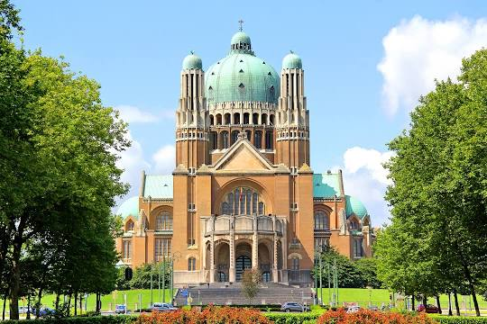
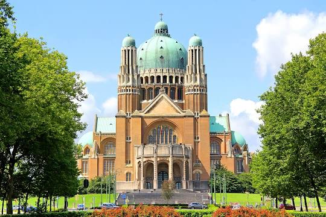

Je vis à Bruxelles depuis de nombreuses années et, bien qu’ayant pour habitude de voir des pubs et des flyers qui vantaient les mérites ainsi que le caractère fort ludique de l’exposition {Expérience Brussels} , j’étais vraiment très loin d’imaginer que cette visite allait m’offrir des connaissances et une découverte phénoménale profonde sous tous les angles de la belle et magnifique ville de Bruxelles, qui porte valablement et fièrement son nom de capitale de l’Europe.
Ma première grande satisfaction a été l’accueil chaleureuse et joviale du personnel, à partir du réceptionniste jusqu’à l’hôtesse qui nous a guidés à travers les couloirs, et ensuite par des escaliers dans une salle où nous attendait une dame {la maitresse du jeu} assise à une table sur laquelle était dessinés des cercles de différentes couleurs accompagnés des figurines coloriées miniatures qui représentent les monuments et des statuts célèbres de la ville de Bruxelles.
Le mode artistique spectaculaire et rupestre des différentes informations sur la ville de Bruxelles m’a permis de découvrir beaucoup de choses qui ont surement déjà été mentionnées dans des médias, et dont j’ignorais jusqu’à ce jour béni de la visite à l’expo Expérience Brussels.
J’ai découvert par exemple que Bruxelles compte 300 représentants permanents internationales qui sont la voix de la Belgique en Europe et représentent ses intérêts au Conseil de l'Union européenne. J’ai découvert que 4000 personnes travaillent pour l’Otan, que Bruxelles est la ville au monde avec le plus grand nombre de correspondants avec Washington, près de 40 000 personnes travaillent pour la CEE, qu’il y a plus de 1200 ONG, environ 40 000 employés par l’UE, j’ai découvert que Bruxelles est la première ville européenne et deuxième ville mondiale après Singapour où se tiennent des réunions internationales soit entre 50 000 et 70 000 par an, c’est aussi la ville qui compte le plus grand nombre de représentations diplomatiques au monde.
Une journée passée à Expo Brussels et Bruxelles n’a plus aucun secret pour vous puisque c’est un voyage jusqu’au fin fond de cette capitale de l’Europe, de cette belle et magnifique ville de Bruxelles.
Vous avez ci-dessous les images de quelques fresques, architectures et monuments célèbrent qui permettent de reconnaître la ville de Bruxelles de par le monde.
 
